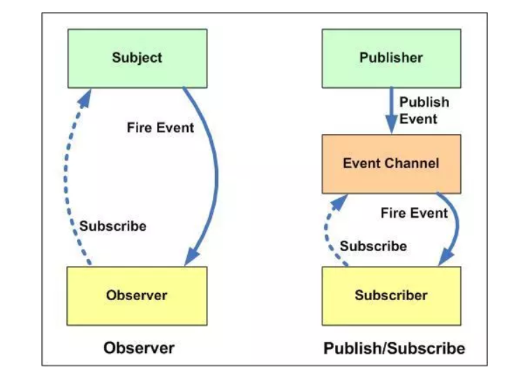

观察者模式: 定义了对象间一种一对多的依赖关系,当目标对象(subject)的状态发生改变时，所有依赖它的对象Observer都会得到通知。
发布-订阅模式: 基于一个事件(主题)通道,希望接收通知的对象Subscriber通过自定义事件订阅主题, 被激活事件的对象Publiber通过发布 主题事件的方式通知各个订阅该主题的Subscriber对象，换句话说，发布-订阅模式用来处理不同系统组件的信息交流， 即使这些组件不知道对方的存在。

- 区别:
- 1.观察者模式，观察者是知道发布者的，发布者一直保持对观察者进行记录。在发布-订阅模式中，发布者和订阅者不知道对方的存在， 他们只有通过消息代理进行通信。
- 2.发布-订阅模式中，组件之间是松散耦合的，观察者模式正好相反。
- 3.观察者模式大多数都是同步的，比如当事件触发，发布者就会调用观察者的方法。 而发布-订阅模式大多数都是异步的（使用消息队列）
- 4.观察者模式所有的观察者都能收到通知，无法筛选过滤;发布-订阅则相反。
- 5.发布-订阅模式不易阅读，额外对象创建，消耗时间和内存(很多设计模式的通病)
- 6.观察者模式的场景: Vue的依赖追踪,原生事件
- 7.发布订阅模式的场景： React的合成事件，vue组件间通信的EventBus。